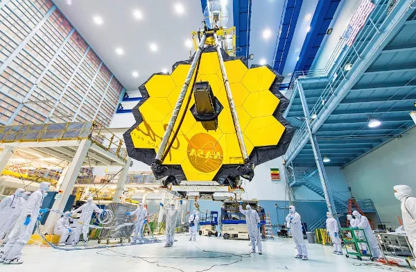
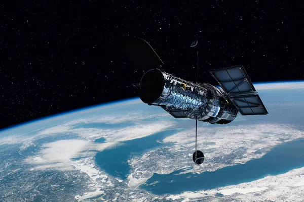

O Telescópio Espacial James Webb Telescópio Espacial James Webb é um telescópio espacial que foi lançado ao espaço em 25 de dezembro de 2021 com o intuito de responder a diversas questões científicas.
O Telescópio Espacial James Webb , em inglês James Webb Space Telescope (JWST), é um telescópio espacial projetado pela Nasa em colaboração com a Agência Espacial Europeia (ESA) e a Agência Espacial Canadiana (CSA) com o intuito de substituir o Telescópio Espacial Hubble. Ele está localizado a mais de 1 milhão de quilômetros da órbita da Terra, orbitando o ponto Sol-Terra L2 Lagrange.
Ele foi desenvolvido para responder aos questionamentos sobre a formação do universo, a existência de planetas habitáveis planetas habitáveis, a evolução de galáxias, estrelas, buracos negros e sistemas planetários e investigar com profundidade os exoplanetas.
O Telescópio Espacial James Webb está localizado a aproximadamente 1.500.000 uilômetros da Terra , no ponto Sol-Terra L2 Lagrange, orbitando ao redor da Terra e do Sol, estando mais distante que a Lua, que está a 384.400 quilômetros da Terra.
Essa localização foi escolhida de maneira estratégica para a observação dos comprimentos de onda de luz do infravermelho, já que para observar isso é necessário que ele esteja abaixo da temperatura de 50 K (Kelvin), equivalente a -223ºC, que seus detectores estejam afastados da luz solar e da emissão térmica terrestre e, ainda assim, que consiga manter comunicação com a Terra.
Podemos citar algumas características do Telescópio Espacial James Webb:
O Telescópio Espacial James Webb conseguirá responder a diversas questões científicas, servindo para:
O Telescópio Espacial James Webb foi criado para ser o sucessor do Telescópio Espacial Hubble e do Telescópio Espacial Spitzer, ultrapassando a capacidade dos seus predecessores e visualizando uma grande quantidade de estrelas e galáxias nas mais variadas distâncias.
Isso se deve ao fato de o Telescópio James Webb estar a 1 milhão e 500 mil quilômetros da órbita da Terra, diferentemente do Hubble, que está a apenas 570 quilômetros da órbita da Terra. Além disso, ele possui uma massa de quase metade do Hubble, um espelho primário com diâmetro de mais do que o dobro do seu antecessor e área seis vezes maior que a do Hubble.
Em setembro de 1989, antes do lançamento do Telescópio Espacial Hubble, durante um workshop realizado no Space Telescope Science Institute (STScI), iniciou-se a discussão sobre quem realizaria a “próxima grande missão” após o Telescópio Espacial Hubble.
Foi iniciado, em 1996, o projeto do Telescópio Espacial de Próxima Geração — em inglês, Next Generation Space Telescope (NGST) —, da Nasa em colaboração com a Agência Espacial Europeia (ESA) e a Agência Espacial Canadiana (CSA). Em 2002, foi alterado o nome do Telescópio Espacial de Próxima Geração para Telescópio Espacial James Webb.
Em 2007, o Telescópio Espacial James Webb deveria estar finalizado para lançamento, contudo ocorreram algumas falhas técnicas em seu espelho primário e novas reformulações que impediram que ele fosse lançado.
As despesas orçamentárias para o Telescópio Espacial James Webb, em 2014, estavam escassas, no valor de 3,3 bilhões de dólares. Em vista disso, o Cômite Científico da Câmara dos Deputados dos Estados Unidos da América sugeriu interromper o projeto. Contudo, os seus custos já haviam ultrapassado 8 bilhões de doláres. Por fim, um novo acordo financeiro foi firmado, garantindo ao projeto 10 bilhões de dólares. Em 2016, o Telescópio Espacial James Webb foi concluído.
Em 25 de dezembro de 2021, o Telescópio Espacial James Webb foi lançado a bordo do foguete Ariane 5, através do Centro Espacial de Kourou, na Guiana Francesa. Após apenas 31 minutos, ele já havia começado a implementação de seus painéis solares, antena, escudo solar, espelho e braço.
O Telescópio Espacial James Webb, em 24 de janeiro de 2022, atingiu a sua localização atual, o ponto L2 Lagrange. Em 11 de julho de 2022, a Nasa divulgou a primeira imagem registrada pelo Telescópio Espacial James Webb ao presidente dos Estados Unidos da América, Joe Biden.
Em 12 de julho de 2022, a Nasa divulgou ao público um conjunto de imagens registradas pelo Telescópio James Webb contendo imagens da Nebulosa Carina, Nebulosa do Anel Sul, Quinteto de Stephan, o Exoplaneta WASP 76b e o Aglomerado de Galáxias SMACS 0723. Provavelmente em 2032, o Telescópio Espacial James Webb finalizará a sua investigação do espaço.
"James Edwin Webb (1906-1992)" foi um militar e político dos Estados Unidos da América que administrou a Nasa de 1961 a 1968, a convite do presidente John F. Kennedy (1917-1963) para substituir o diretor interino Hugh L. Dryden (1898-1965).
Durante o período da diretoria de James Webb, o governo estadunidense desenvolveu o Programa Apollo, com o objetivo de o homem pousar na Lua (em 1969, obteve-se sucesso). Webb também foi responsável por transformar a Nasa de um conjunto de institutos de pesquisas separados em uma organização estruturada e organizada tal como é nos dias atuais. Além disso, ele foi essencial para a formação do Centro de Espaçonaves Tripuladas, atualmente conhecido como Centro Espacial Lyndon B. Johnson, em Houston.